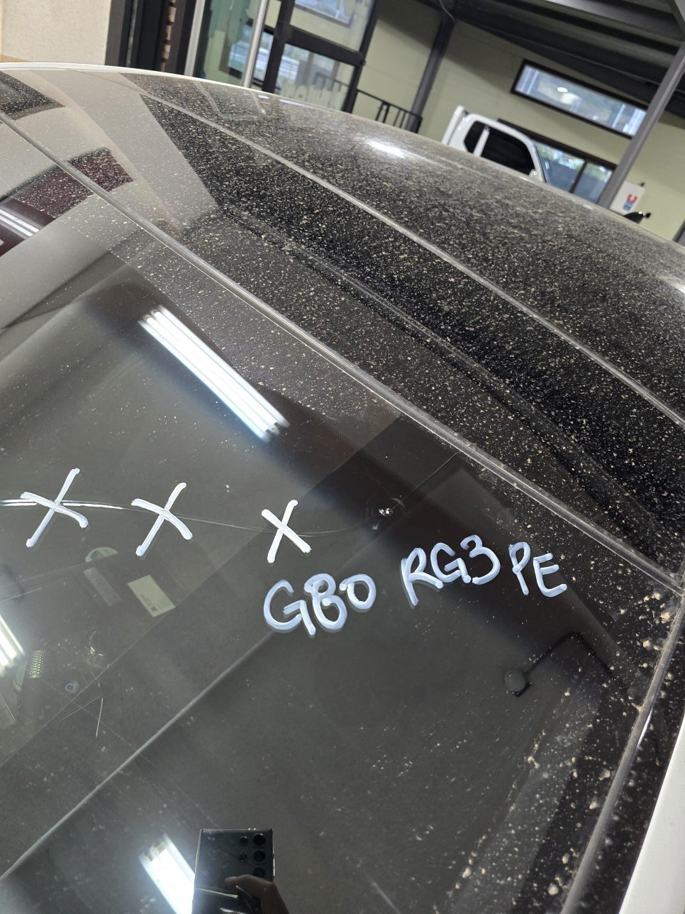
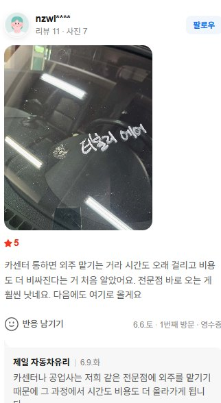
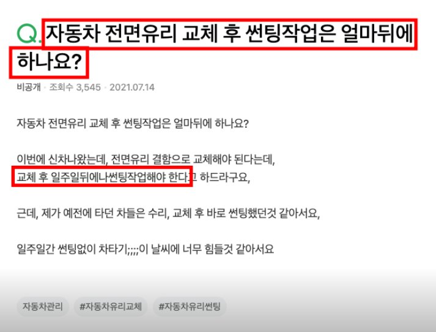
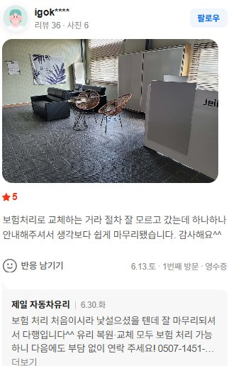

얼마 전에 주행중에 돌빵맞고 유리가 갈라져서 갑작스레 차유리를 교체했는데요.
와 진짜 이거 모르고 있었으면, 최소 20~30만원 더 깨질뻔했네요..

깨진유리 제네시스G80 · 탭→전체화면→스크린샷다른 분들은 안 헤매셨으면 해서 정보 남겨봐요.
일단 카센터부터 전화하면 안 됩니다. 유리전문점이 따로있습니다.
나중에 유리집 사장님한테 들으니, 카센터에 맡겨도 결국 자기네 같은 전문점으로 외주가 넘어온다고 하시더라고요.
애초에 카센터는 유리를 전문으로 못한다고합니다. 유리는 안떨어지도록 부착하는 화확기술이 필요한데... 카센터에는 이런거 못한다고해요.
그래서, 다시 외주를 맡기는데 이러면서 외주비는 다 소비자가 낸다네요
그럴 거면 처음부터 전문점 가는 게 맞죠.

탭→전체화면→스크린샷그리고, 여기 사장님한테 들어보니까..
자재를 어떤걸 쓰느냐에따라, 1시간에 끝날수도, 하루에서 일주일 더걸릴수도 있다네요.
예컨데, 그런곳은 거의 없겠지만 마진아끼려고 중국산실리콘이나 건축용실리콘 써버리면, 경화될때까지 24시간더걸린다고 합니다. 품질도 안좋고요.
자동차 전용 실리콘 사용하는곳 가야, 1시간 안에 교체 가능하다네요.
그리고, 썬팅까지 한번에 가능한곳이 있고, 아닌곳이있는데요. 교체랑 썬팅안되는곳은 일주일뒤에 썬팅샵 다시가야한다고 하네요.

기타 교체후썬팅시기질문 · 탭→전체화면→스크린샷저는 여기서 썬팅까지 1시간안에 교체했는데, 진짜 곧바로 차량쓰셔야하는분은 강추드립니다. 보험처리도되서 돈도 그렇게 많이 안들고요.

탭→전체화면→스크린샷확실히 전문점이라 꼼꼼히 봐주시더라고요. 혹시 참고하실까 봐 번호 남겨요. 0507-1451-6262